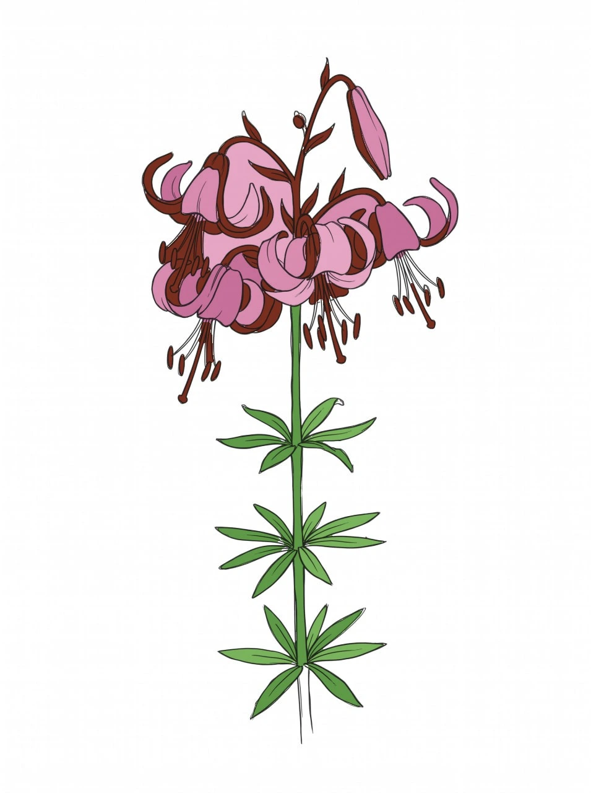
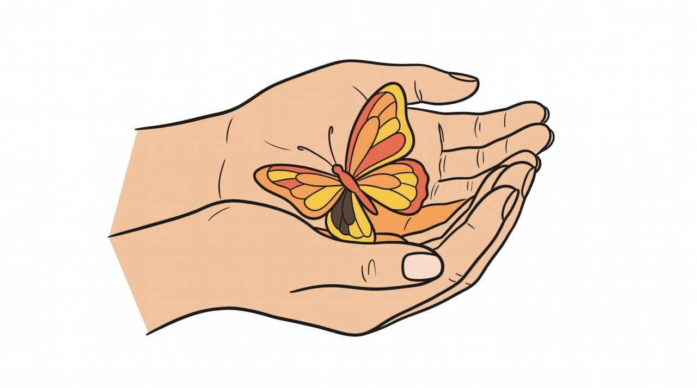

Зникаючі види та збереження
Чому зникають метелики?
Стрімке скорочення популяції метеликів — це тривожний сигнал про стан нашої екології. Головною причиною є втрата природних середовищ існування. Розорювання цілинних степів, вирубка лісів, забудова луків та осушення боліт призводять до того, що комахам просто ніде жити та розмножуватися.
Другим нищівним фактором є масове використання агрохімікатів. Пестициди та інсектициди, якими обробляють поля на Вінниччині, вбивають не лише шкідників, а й корисних комах-запилювачів. Гербіциди ж знищують дикорослі рослини (бур'яни), які є єдиним джерелом їжі для гусениць багатьох рідкісних видів метеликів.
Третя вагома проблема — зміни клімату. Аномальні посухи, непередбачувані заморозки навесні та зсув сезонів порушують тонкий біологічний годинник природи. Часто трапляється так, що метелики виходять з лялечок тоді, коли потрібні їм квіти ще не розцвіли або вже відцвіли, через що комахи гинуть від голоду.
Не меншої шкоди завдає і людська недбалість. Традиція весняного та осіннього спалювання сухої трави і листя (що є незаконним) живцем знищує мільйони лялечок та яєць метеликів, які зимують у підстилці. А надмірне викошування міських газонів «під нуль» перетворює їх на зелені пустелі без нектару.

Як ми можемо допомогти метеликам? 10 простих кроків
Кожен із нас може зробити свій внесок у збереження цих тендітних створінь. Ось що можна зробити навіть у власному дворі чи на дачі:
- Садіть квіти-медоноси. Висаджуйте чорнобривці, ехінацею, лаванду, будлею та айстри. Вони забезпечать дорослих метеликів нектаром з весни до пізньої осені.
- Залиште «дикий» куточок. Виділіть невелику ділянку саду, де безперешкодно ростимуть кропива, будяк чи подорожник. Саме ці рослини є головною їжею для гусениць найкрасивіших метеликів (наприклад, кропивниці та павичевого ока).
- Відмовтеся від отрутохімікатів. Замініть токсичні пестициди у своєму саду на безпечні біологічні засоби захисту рослин.
- Не спалюйте сухе листя та траву. У сухостої зимують лялечки та яйця метеликів. Краще компостуйте листя або залишайте його під деревами.
- Створіть «поїлку» для метеликів. Комахам потрібні мінерали. Насипте в неглибоку тарілку вологого піску з дрібкою солі або покладіть кілька перестиглих фруктів (наприклад, шматочки яблука чи банана) у спекотний день.
- Не косіть газони надто часто. Дозвольте конюшині та кульбабам зацвісти перед тим, як скосити траву — це перша весняна їжа для комах.
- Облаштуйте місця для зимівлі. Невелика купа хмизу, складені дрова або шпаківня зі щілинами стануть чудовим укриттям для метеликів, які зимують у стадії дорослої комахи.
- Займайтеся фотополюванням, а не виловом. Замість того, щоб ловити метеликів сачком заради колекції (особливо червонокнижних), колекціонуйте їхні фотографії.
- Зменште нічне освітлення. Якщо ви живете в приватному будинку, вимикайте зайве вуличне світло вночі. Яскраві ліхтарі дезорієнтують нічних метеликів (таких як бражник), виснажуючи їх.
- Поширюйте знання. Розкажіть друзям, рідним і дітям про важливість метеликів в екосистемі або просто поділіться посиланням на цей сайт!
